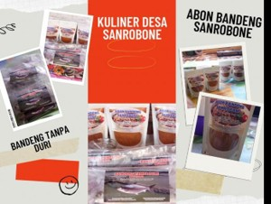
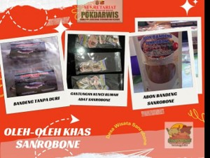
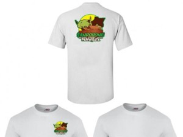
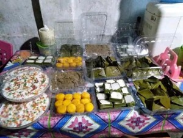

Souvenir yang dikembangkan oleh Pokdarwis Desa Wisata Sanrobone merupakan bagian dari upaya pemberdayaan ekonomi masyarakat dan promosi destinasi. Produk yang tersedia meliputi abon ikan tanpa tulang sebagai oleh-oleh kuliner khas, gantungan kunci berbentuk ikon budaya lokal, kue-kue tradisional serta kaos bertema Desa Wisata Sanrobone. Kehadiran souvenir tersebut tidak hanya memberikan nilai ekonomi bagi masyarakat, tetapi juga menjadi media untuk memperkenalkan identitas budaya, sejarah, dan religi Sanrobone kepada wisatawan.

Abon Ikan Bolu & Bandeng Tanpa Tulang Sanrobone
Produk olahan ikan khas Sanrobone yang dapat dijadikan oleh-oleh kuliner. Abon ini diolah secara khusus tanpa tulang (tanpa duri) sehingga aman dan nikmat dikonsumsi oleh seluruh kalangan sebagai pelengkap hidangan.

Kriya Gantungan Kunci Sanrobone
Souvenir kerajinan tangan yang mengangkat identitas dan ikon budaya Sanrobone. Beberapa pengembangan souvenir ini berbentuk rumah adat dan Balla Lompoa sebagai media promosi wisata desa. Sangat cocok dijadikan buah tangan praktis nan bermakna.

Baju Kaos Desa Wisata Sanrobone
Kaos dengan desain yang memperkenalkan identitas Desa Wisata Sanrobone sebagai destinasi budaya, sejarah, dan religi. Produk ini didesain dan dibuat oleh Pokdarwis sebagai oleh-oleh khas desa wisata. Varian kaos yang mengangkat tema budaya lokal Sanrobone sebagai ciri khas destinasi wisata.

Aneka Kanrejawa Turiolo
Aneka kanrejawa turiolo, istilah ini bermakna beraneka ragam kue atau jajanan manis tradisional warisan leluhur. Kuliner ini sering diolah dalam kegiatan memasak massal budaya lokal Makassar dan menjadi produk kuliner khas di kawasan wisata sejarah Desa Wisata Sanrobone. Beberapa kue tradisional yang dijadikan oleh-oleh antara lain:
- Barongko: Kue berbahan pisang yang dibungkus daun pisang dan dikukus.
- Bolu Cukke: Kue tradisional khas Bugis-Makassar yang memiliki cita rasa manis dengan aroma rempah.
- Kue Tumbu (Bolu Peca'): Kue berbahan dasar gula merah dan tepung yang dimasak dalam cetakan bambu.
- Doko-Doko Cangkuling: Kue tradisional dari tepung beras ketan dengan parutan kelapa.
- Onde-Onde Ubi Ungu: Variasi kue tradisional yang banyak disukai wisatawan.
- Bannang-Bannang: Kue khas Bugis-Makassar berbentuk seperti benang yang digoreng dan diberi lapisan gula merah.
- Kue Baje: Makanan tradisional berbahan ketan dan gula merah yang cukup tahan lama sehingga cocok sebagai oleh-oleh.
- Kue Cucuru' Bayao: Kue khas Makassar yang terbuat dari telur, tepung, dan gula merah.
- Puding Es Doger: Inovasi kuliner yang menggabungkan cita rasa es doger tradisional dengan tekstur puding yang lembut. Produk ini umumnya dibuat dari santan, susu, agar-agar, gula, serta tambahan topping seperti kelapa muda, tape, dan potongan buah.
Informasi & Kontak Pemesanan
Bagi pengunjung yang tertarik untuk membeli atau memesan produk souvenir dan kuliner dalam jumlah besar, silakan hubungi Pokdarwis Desa Sanrobone melalui kontak berikut:
Alamat: Dusun Sanrobone, Desa Sanrobone, Kecamatan Sanrobone, Kabupaten Takalar, Provinsi Sulawesi Selatan.